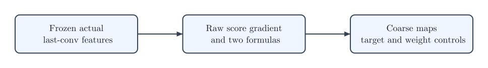
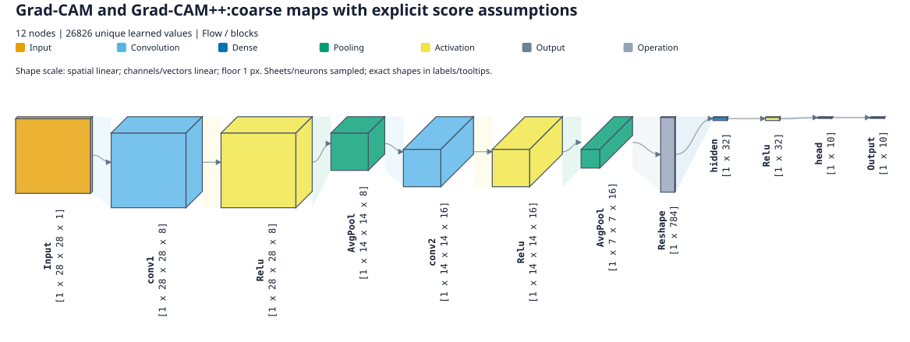
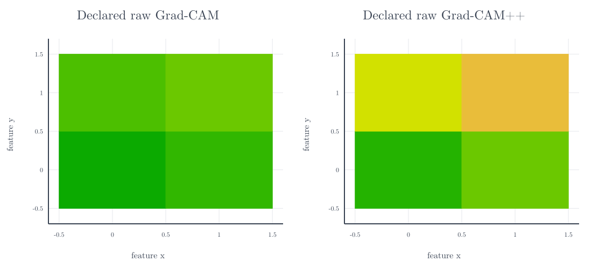
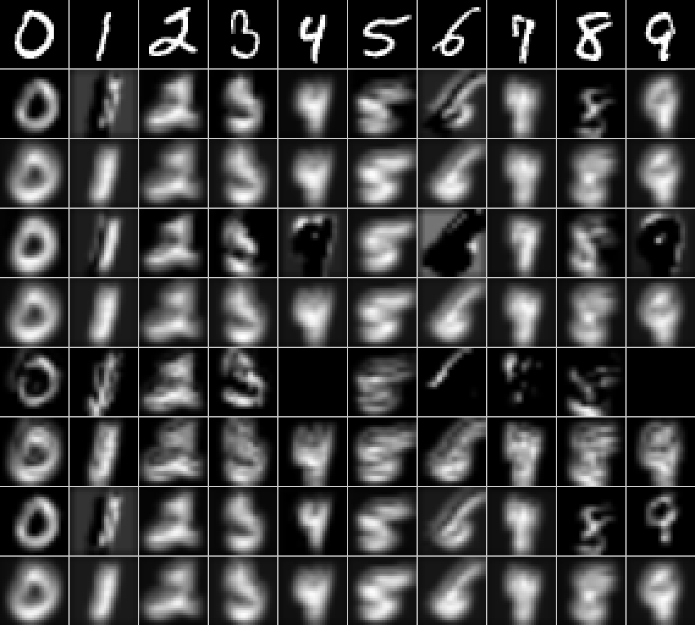
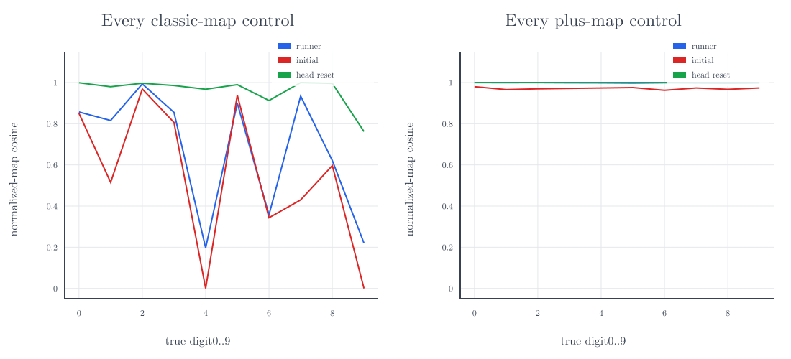

Grad-CAM and Grad-CAM++:coarse maps with explicit score assumptions
Abstract
Image-level digit scores do not reveal which coarse convolutional features influence them. Freeze the verified MNIST classifier and compute both Grad-CAM and an explicit locally-affine exp-score Grad-CAM++formulation,with original images,all intermediates and target/weight controls.
Source example: examples/cpp/source/nn/1_convolutional_neural_networks/1.11_interpretability/grad_cam.cpp.
The method
For last post-ReLU featuresAand fixed raw scoreS,letg=dS/dA. Classic channel weights are spatial means ofg. Grad-CAM++uses positive-gradient pixel weights derived from exp(S-c),withc held fixed at the currentS and locally affine downstreamS:
The implementation masks irrelevant nonpositive-gradient denominators safely. It does not label first-gradient powers as rawlogit higher derivatives. Every numerical model,derivative,formula,normalization,metric and plotting value uses tensors;the classifier fitting loop is in vanilla_saliency.
The concept diagram below is drawn by dm::graphics::Diagram. Its editable C++
source is the complete block below; regeneration uses the same datamunge toolchain
as the numerical examples. Exports consume the saved local SVG.
#include <dm/dm.hpp>
int main() {
std::filesystem::create_directories("build");
dm::graphics::Diagram diagram;
diagram.node("n0", {0.0, 0}, "Frozen actual\n last-conv features");
diagram.node("n1", {5.2, 0}, "Raw score gradient\n and two formulas");
diagram.node("n2", {10.4, 0}, "Coarse maps\n target and weight controls");
diagram.edge("n0", "n1").edge("n1", "n2");
diagram.save_svg("build/grad_cam_concept.svg");
}
Frozen classifier and coarse feature coordinates
Restore the exact shared MNIST classifier from [vanilla saliency](vanilla_saliency.mepml),whose96visible tensor Adam updates select epoch3on validation. Its200held-out images include24errors,88%accuracy. No classifier fitting occurs in this report. The same ten first occurrences of true digits0..9retain their original source IDs,fixed learned top categories and fixed runner-up categories. Actual initial weights and initial-head-only controls preserve the original training provenance.
Differentiate selected RAWlogits with respect to the last POST-ReLU convolution, A[N,14,14,16]. Grad-CAM spatially averages these derivatives per channel,then rectifies the weighted feature sum. The14x14map is a coarse feature-space summary;resizing it to28pxadds no localization information.
Executed tensor architecture
The diagram shows the forward MNIST CNN that the attribution or feature-optimization method inspects; the attribution algorithm is explained separately.
This figure executes the inference configuration shown in the code, using a zero-valued shape probe without fitting or loading a checkpoint. Named stage boundaries group whole subgraphs where available; other nodes retain functional-layer detail. Exact batch-inclusive shapes and reachable parameter totals come from the trace. Shared linear scales map spatial dimensions and channel counts to blocks; the one-pixel visibility floor is disclosed in the legend. Labels use compact monospace text, rotate counterclockwise and sit beside their own glyphs. Arrows flow left to right; wide diagrams scroll at native size on the website.
#include <dm/dm.hpp>
int main() {
namespace n = dm::nn;
namespace m = n::models;
n::set_num_threads(2);
std::filesystem::create_directories("build");
n::ParameterStore p(1103);
n::Module architecture_model(
[&](const n::Tensor& image) { return m::SaliencyCnn(p, image).logits; },
"Grad-CAM and Grad-CAM++:coarse maps with explicit score assumptions");
n::ModelPlotOptions options;
options.style = n::ModelPlotStyle::Flow;
options.detail = n::ModelPlotDetail::Blocks;
options.labels = {.type = n::ModelPlotLabel::NameAndShape, .size = 12, .wrap = 24};
options.spacing = {.layer = 24, .lane = 12, .label = 8, .margin = 20};
options.sizing.spatial_size = 96;
options.sizing.channel_size = 42;
options.sizing.minimum_extent = 1;
options.opacity = .8;
const auto diagram = architecture_model.plot(n::zeros({1, 28, 28, 1}), options);
diagram.save_svg("build/grad_cam_architecture.svg");
std::print(
"{} displayed nodes; {} reachable learned values.\n",
diagram.nodes().size(),
diagram.parameter_count());
}12 displayed nodes; 26826 reachable learned values.

Hand-checkable channel weights and exp-score derivatives
The declared two-batch,two-channel fixture exposes every channel weight, positive alpha and raw map. Native tests independently verify every formula, zero-map normalization,and24actual first/second/third derivatives of exp(affineS). For Grad-CAM++,useY=exp(S-c),wherec is fixed at the currentS. Inside a fixed hidden-ReLU region,Sis affine inAandY=1at the evaluation point. Its diagonal first/second/third derivatives areg,g squared,g cubed. The RAWlogit's second and third derivatives are locallyzero;they are not those powers.
For positiveg,paperEq19cancelsg squared toalpha=1/(2+sum_spatial(A)*g). For g<=0,the ReLUgradient contribution vanishes and alpha is explicitly0. Post-ReLUnonnegativeAkeeps relevant denominators at least2. This formulation requires a locally affine downstream score and does not claim general smooth nonlinear heads satisfy the same derivative identities.
#include <dm/dm.hpp>
int main() {
namespace n = dm::nn;
namespace m = n::models;
const auto activation = n::arange(1, 17).reshape({2, 2, 2, 2}) * .05;
const auto g = n::from_vector(
std::vector<float>{
.3f, -.2f, 0, .4f, -.1f, .2f, .5f, 0, .3f, -.2f, 0, .4f, -.1f, .2f, .5f, 0},
{2, 2, 2, 2});
const auto maps = m::ClassActivationMaps(activation, g);
std::print(
"Declared spatial mean weights {},positivealpha {},plusweights {}.\n",
maps.grad_weights,
maps.positive_alpha,
maps.plus_weights);
std::print(
"Raw signed classic {},rectifiedclassic {},plus {};allzero normalized {}.\n",
maps.grad_signed,
maps.grad_map,
maps.plus_map,
m::NormalizeCam(n::zeros({1, 2, 2})));
const auto peak = n::max(n::stack({n::max(maps.grad_map), n::max(maps.plus_map)}, 0)).item();
auto a = n::plot_tensor_map(n::reverse(n::select(maps.grad_map, 0, 0), {0}), 0, peak),
b = n::plot_tensor_map(n::reverse(n::select(maps.plus_map, 0, 0), {0}), 0, peak);
a.title("Declared raw Grad-CAM").x_label("feature x").y_label("feature y");
b.title("Declared raw Grad-CAM++").x_label("feature x").y_label("feature y");
auto layout = dm::graphics::RLayout::create(1, 2);
layout.add(a).add(b).size(1100, 500).fit_panels().save_svg("build/grad_cam_fixture.svg");
}Declared spatial mean weights float32[2, 2] [[0.175, 0.1], [0.175, 0.1]],positivealpha float32[2, 2, 2, 2] [[[[0.446429, 0], [0, 0.416667]], [[0, 0.454545], [0.416667, 0]]], [[[0.367647, 0], [0, 0.328947]], [[0, 0.396825], [0.3125, 0]]]],plusweights float32[2, 2] [[0.342262, 0.257576], [0.266544, 0.210944]]. Raw signed classic float32[2, 2, 2] [[[0.01875, 0.04625], [0.07375, 0.10125]], [[0.12875, 0.15625], [0.18375, 0.21125]]],rectifiedclassic float32[2, 2, 2] [[[0.01875, 0.04625], [0.07375, 0.10125]], [[0.12875, 0.15625], [0.18375, 0.21125]]],plus float32[2, 2, 2] [[[0.0428707, 0.102854], [0.162838, 0.222822]], [[0.225417, 0.273166], [0.320915, 0.368663]]];allzero normalized float32[1, 2, 2] [[[0, 0], [0, 0]]].

Every actual last-conv derivative and immutable restoration
Compute both methods for the fixed selected category,runner-up,full actual initialization,and selected model with only its categorical head reset. The classifier weights stay unchanged. Per-map maximum normalization is used for display only;it discards absolute amplitude,so raw peaks and all intermediates are also retained. A weak random-model response can look strong after this normalization. All ten original images remain visible above the method maps.
Check repeated outputs,single/batch coarse-map agreement,and a central finite difference of the actual frozen classifier tail at its largest first-image feature derivative. The native original workflow additionally checks all320 hidden pre-activations stay away from ReLU boundaries at the evaluation point.
#include <dm/dm.hpp>
int main() {
namespace n = dm::nn;
namespace m = n::models;
n::set_num_threads(2);
std::filesystem::path cache;
if (const auto* p = std::getenv("DATAMUNGE_DATA_DIR"))
cache = p;
else if (const auto* p = std::getenv("XDG_CACHE_HOME"))
cache = std::filesystem::path(p) / "datamunge/datasets";
else
cache = std::filesystem::path(std::getenv("HOME")) / ".cache/datamunge/datasets";
dm::datasets::prepare_example_data("mnist-assets", cache.string());
const auto pools = m::LoadSaliency(cache / "saliency");
const auto& fit = pools[0];
const auto& validation = pools[1];
const auto& test = pools[2];
n::ParameterStore p(1103);
{
n::NoGradGuard guard;
m::SaliencyCnn(p, n::zeros({1, 28, 28, 1}));
}
auto predict = [&](const n::Tensor& images) {
n::NoGradGuard guard;
std::vector<n::Tensor> parts;
for (std::int64_t start = 0; start < images.size(0); start += 32)
parts.push_back(
m::SaliencyCnn(
p,
n::slice_axis(images, 0, start, std::min<std::int64_t>(start + 32, images.size(0))))
.logits);
return n::concat(parts, 0);
};
for (const auto& [key, value] : n::load_npz("build/vanilla_saliency_best.npz"))
p.set(key, value.clone());
std::vector<std::int64_t> chosen;
const auto labels = test.labels.to_vector<int>();
for (int digit = 0; digit < 10; ++digit) {
const auto it = std::find(labels.begin(), labels.end(), digit);
chosen.push_back(it - labels.begin());
}
const auto examples = m::SaliencyRows(test, chosen);
const auto z = predict(examples.images);
const auto sorted = n::argsort(z, true);
const auto targets = n::select(sorted, 1, 0).to(n::DType::Int32),
runners = n::select(sorted, 1, 1).to(n::DType::Int32);
const auto before = p.flatten();
n::ParameterStore fresh(1103), head(1103);
{
n::NoGradGuard guard;
m::SaliencyCnn(fresh, n::zeros({1, 28, 28, 1}));
m::SaliencyCnn(head, n::zeros({1, 28, 28, 1}));
}
for (const auto& [key, value] : n::load_npz("build/vanilla_saliency_best.npz"))
head.set(key, value.clone());
for (const auto& [key, value] : n::load_npz("build/vanilla_saliency_initial.npz")) {
fresh.set(key, value.clone());
if (key.starts_with("head/"))
head.set(key, value.clone());
}
const auto fresh_before = fresh.flatten(), head_before = head.flatten();
const auto trained = m::SaliencyCam(p, examples.images, targets),
runner = m::SaliencyCam(p, examples.images, runners),
initial = m::SaliencyCam(fresh, examples.images, targets),
reset = m::SaliencyCam(head, examples.images, targets),
repeat = m::SaliencyCam(p, examples.images, targets),
single = m::SaliencyCam(
p, n::slice_axis(examples.images, 0, 0, 1), n::slice_axis(targets, 0, 0, 1));
const auto parity = n::max(n::abs(trained.logits - z)),
deterministic = n::max(n::abs(trained.gradient - repeat.gradient)),
batch = n::max(
n::abs(single.plus_normalized - n::slice_axis(trained.plus_normalized, 0, 0, 1)));
const auto feature = n::slice_axis(trained.activation, 0, 0, 1);
const int coordinate = n::argmax(n::abs(single.gradient).reshape({3136}), 0).item<int>();
const auto delta = n::equal(n::arange(0, 3136, 1, n::DType::Int64), coordinate)
.to(n::DType::Float32)
.reshape({1, 14, 14, 16}) *
.001;
const auto target = n::slice_axis(targets, 0, 0, 1);
const auto fd = (m::SaliencyScore(m::SaliencyCamTail(p, feature + delta), target) -
m::SaliencyScore(m::SaliencyCamTail(p, feature - delta), target)) /
.002;
const auto error = n::abs(fd - single.gradient.reshape({3136}).at({coordinate}));
if (parity.item() != 0 || deterministic.item() != 0 || batch.item() > 2e-6 ||
error.item() > .01 + .01 * std::abs(single.gradient.reshape({3136}).at({coordinate})) ||
before != p.flatten() || fresh_before != fresh.flatten() || head_before != head.flatten())
return 1;
std::print(
"Actual{}lastconvfeature derivatives;logit/repeat {}/{},single/batch "
"{:.9g};FDcoordinate{}error {:.9g};all24selected/controlarrays unchanged.\n",
trained.gradient.numel(),
parity.item(),
deterministic.item(),
batch.item(),
coordinate,
error.item());
n::NamedTensors arrays{
{"images", examples.images},
{"targets", targets},
{"runners", runners},
{"source_ids", examples.source}};
std::vector<n::Tensor> displays{examples.images};
std::print("| control | actual raw classic peaks | actual raw plus peaks |\n|---|---|---|\n");
for (const auto& [name, value] : std::vector<std::pair<std::string, m::SaliencyCamOutput>>{
{"trained", trained},
{"runner", runner},
{"initial", initial},
{"head_initial", reset}}) {
std::vector<std::pair<std::string, n::Tensor>> values = {
{"activation", value.activation},
{"gradient", value.gradient},
{"cam_weights", value.maps.grad_weights},
{"cam_signed", value.maps.grad_signed},
{"cam", value.maps.grad_map},
{"positive_alpha", value.maps.positive_alpha},
{"plus_weights", value.maps.plus_weights},
{"plus", value.maps.plus_map},
{"cam_normalized", value.normalized},
{"plus_normalized", value.plus_normalized},
{"cam_resized", value.resized},
{"plus_resized", value.plus_resized},
{"logits", value.logits}};
for (const auto& [key, tensor] : values)
arrays.push_back({name + "_" + key, tensor});
displays.push_back(n::expand_dims(value.resized, 3));
displays.push_back(n::expand_dims(value.plus_resized, 3));
std::print(
"| {} | {} | {} |\n",
name,
n::max(value.maps.grad_map, {1, 2}),
n::max(value.maps.plus_map, {1, 2}));
}
std::print(
"\n| true digit | original source ID | fixed target | fixed runner "
"|\n|---:|---:|---:|---:|\n");
for (int i = 0; i < 10; ++i)
std::print(
"| {} | {} | {} | {} |\n",
examples.labels.at({i}),
examples.source.at({i}),
targets.at({i}),
runners.at({i}));
n::save_npz("build/grad_cam_maps.npz", arrays);
n::save_image_grid(n::concat(displays, 0), "build/grad_cam_maps.png", 10, 0, 1, 2, .8, 4);
}Actual31360lastconvfeature derivatives;logit/repeat 0/0,single/batch 0;FDcoordinate1089error 0.000302806497;all24selected/controlarrays unchanged.
| control | actual raw classic peaks | actual raw plus peaks |
|---|---|---|
| trained | float32[10] [0.0247833, 0.0100689, 0.0757562, 0.0332165, 0.0558523, 0.0393552, 0.021051, 0.0527076, 0.0214938, 0.0355218] | float32[10] [8.35447, 6.42522, 10.8451, 7.83596, 8.66609, 7.13047, 7.95004, 9.80983, 8.43926, 7.87623] |
| runner | float32[10] [0.0683585, 0.018275, 0.0529298, 0.0308585, 0.00934214, 0.0423346, 0.00459477, 0.0281823, 0.0505428, 0.011802] | float32[10] [9.36081, 7.06128, 10.094, 7.33894, 8.58563, 7.24881, 6.90399, 7.27973, 9.16939, 8.64756] |
| initial | float32[10] [0.00874451, 0.00236596, 0.00945545, 0.00454335, 0, 0.0105971, 0.000852652, 0.00222184, 0.00650632, 0] | float32[10] [2.78163, 1.56755, 2.9825, 2.05846, 1.28271, 2.46421, 1.89609, 1.96598, 2.51729, 1.46572] |
| head_initial | float32[10] [0.0211337, 0.0109147, 0.09971, 0.0521858, 0.0298772, 0.0578112, 0.0412461, 0.0448015, 0.0209585, 0.0125691] | float32[10] [7.82469, 5.95692, 10.9742, 8.0659, 7.92305, 7.45323, 8.16664, 9.21211, 8.10136, 7.01776] |
| true digit | original source ID | fixed target | fixed runner |
|---|---|---|---|
| 0 | 66921 | 0 | 2 |
| 1 | 63380 | 1 | 6 |
| 2 | 68936 | 2 | 3 |
| 3 | 62280 | 3 | 5 |
| 4 | 62094 | 9 | 4 |
| 5 | 65222 | 5 | 9 |
| 6 | 61209 | 6 | 1 |
| 7 | 61721 | 7 | 9 |
| 8 | 69402 | 8 | 5 |
| 9 | 62570 | 9 | 4 |

The chosen true digit4is misclassified as9;its selected-target map therefore explains the model's9score,and the runner-up map uses4. No map changes that classification error.
Complete per-case target and weight controls
Compare normalized coarse maps by cosine,including zero-safe cases;retain raw map magnitudes and the actual selected-vs-runner category IDs. These controls test dependence,not explanation quality. A normalized allzero classic map stays zero rather than becomingNaN. Actual mean plus-map cosines are.998598319for the runner,.971336165for full initialization,and.999975561for head reset. These near-identical normalized responses limit evidence of target/head dependence. Classic-map corresponding means are.688794081/.539342060/.960113744. No superiority claim follows from either attractive gallery.
The two methods can produce different maps even though they use the same raw-score first derivatives and frozen classifier.
#include <dm/dm.hpp>
int main() {
namespace n = dm::nn;
std::map<std::string, n::Tensor> a;
for (const auto& [key, value] : n::load_npz("build/grad_cam_maps.npz"))
a.emplace(key, value);
std::vector<n::Tensor> classic, plus;
std::print("| control | mean classic cosine | mean plus cosine |\n|---|---:|---:|\n");
for (const std::string control : {"runner", "initial", "head_initial"}) {
std::vector<n::Tensor> pair;
for (const std::string method : {"cam_normalized", "plus_normalized"}) {
const auto x = a.at("trained_" + method).to(n::DType::Float64).reshape({10, 196}),
y = a.at(control + "_" + method).to(n::DType::Float64).reshape({10, 196});
const auto scale = n::sqrt(n::sum(n::square(x), {1}) * n::sum(n::square(y), {1}));
const auto cosine =
n::sum(x * y, {1}) / n::maximum(scale, n::full({10}, 1e-30, n::DType::Float64));
pair.push_back(cosine);
}
classic.push_back(pair[0]);
plus.push_back(pair[1]);
std::print(
"| {} | {:.9g} | {:.9g} |\n", control, n::mean(pair[0]).item(), n::mean(pair[1]).item());
}
const auto difference =
n::sum(n::abs(a.at("trained_cam_normalized") - a.at("trained_plus_normalized")));
const auto zero = n::sum(n::equal(n::max(a.at("trained_cam"), {1, 2}), 0.).to(n::DType::Int32));
std::print(
"All1960normalized selectedmethod pixels L1difference {:.9g};allzero classic "
"cases {};fixed targets {},runners {}.\n",
difference.item(),
zero.item(),
a.at("targets"),
a.at("runners"));
auto left = dm::graphics::RPlot::create(), right = dm::graphics::RPlot::create();
const std::vector<std::string> labels{"runner", "initial", "head reset"};
const std::vector<dm::graphics::RGB> colors{{37, 99, 235}, {220, 38, 38}, {22, 163, 74}};
for (int i = 0; i < 3; ++i) {
left.lines(
n::arange(0, 10).to_vector<double>(), classic[i].to_vector<double>(), labels[i], colors[i]);
right.lines(
n::arange(0, 10).to_vector<double>(), plus[i].to_vector<double>(), labels[i], colors[i]);
}
left.title("Every classic-map control")
.x_label("true digit0..9")
.y_label("normalized-map cosine")
.y_limits(-.05, 1.15);
right.title("Every plus-map control")
.x_label("true digit0..9")
.y_label("normalized-map cosine")
.y_limits(-.05, 1.15);
auto layout = dm::graphics::RLayout::create(1, 2);
layout.add(left).add(right).size(1100, 500).fit_panels().save_svg("build/grad_cam_controls.svg");
}| control | mean classic cosine | mean plus cosine |
|---|---|---|
| runner | 0.675106948 | 0.998532584 |
| initial | 0.544934028 | 0.971216839 |
| head_initial | 0.958846523 | 0.99997477 |
All1960normalized selectedmethod pixels L1difference 243.070892;allzero classic cases 0;fixed targets int32[10] [0, 1, 2, 3, 9, 5, 6, 7, 8, 9],runners int32[10] [2, 6, 3, 5, 4, 9, 1, 9, 5, 4].

Regenerate adjacent views from this run
Conclusion
Both map methods retain actual coarse features,raw amplitudes and fixed targets. Independent formula/higher-derivative checks and real-tail finite differences validate the stated computation;normalization and control similarities limit what the maps establish about explanation quality or object localization.
References
- [Selvaraju et al.(2017),Grad-CAM](https://arxiv.org/abs/1610.02391).
- [Chattopadhyay et al.(2018),Grad-CAM++:Improved Visual Explanations for Deep Convolutional Networks](https://arxiv.org/abs/1710.11063).